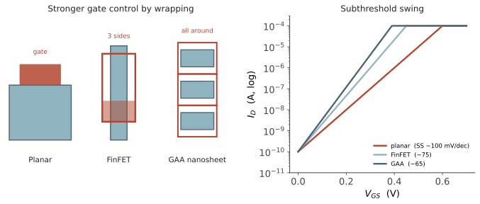

本页目录
器件 V · 从短沟道效应到 GAA
层次：本科核心 + 研究生器件方向入口 ｜ 核对于 2026-07（GAA 量产状态部分属前沿）。 上一页说缩放遇到了功耗墙。本页讲另一半困难：把沟道做短本身就会让晶体管失控。整条器件演进史——平面 → FinFET → 环栅纳米片——可以用一个概念串起来：栅控能力，即栅极对沟道势垒的控制力，相对于漏极对它的干扰。
一、短沟道效应：栅极失去控制
长沟道模型假设沟道势垒只由栅极控制。沟道变短后，漏极的电场开始侵入沟道（回忆第二页：反偏 pn 结的耗尽区会扩张），于是出现一系列失效：
① DIBL（漏致势垒降低）：漏电压帮着栅极把势垒拉低 → \(V_{th}\) 随 \(V_{DS}\) 下降。后果是关不断、输出电导变差（模拟增益下降）。
② 亚阈值摆幅退化：\(SS\) 从理想的 60 mV/dec 恶化到 80–100 mV/dec 以上 → 关态漏电急剧上升（承第四页的功耗链条）。
③ 阈值电压滚降：\(L\) 越短，\(V_{th}\) 越低，且对工艺变异极度敏感。
④ 穿通：源漏耗尽区连通，栅极彻底失控。
⑤ 热载流子效应：高电场加速的载流子撞入栅氧，造成长期退化（可靠性问题，第十四页）。
统一的判据：定义特征长度 \(\lambda \sim \sqrt{\varepsilon_s t_{ox} t_{dep}/\varepsilon_{ox}}\)，只要沟道长度 \(L\) 不能远大于 \(\lambda\)，短沟道效应就会显现。要继续缩短 \(L\)，就必须缩小 \(\lambda\)——办法只有三条：更薄的氧化层、更薄的沟道体、或者更多面的栅极包裹。这三条路，就是接下来三十年的器件演进史。
二、第一条路：更薄的栅介质与高 κ 金属栅
减薄 SiO₂ 提高 \(C_{ox}\)、增强栅控——但薄到约 1–1.2 nm（几个原子层）时，栅隧穿漏电呈指数上升，功耗无法接受。
解法（约 45 nm 节点引入）：改用高介电常数（high-κ）材料（如铪基氧化物）。因为
用高 \(\varepsilon\) 材料，可以在物理厚度更厚（抑制隧穿）的同时获得等效更薄的电学厚度（EOT）。这是一个漂亮的"用材料换几何"的工程胜利。
配套问题：高 κ 材料与多晶硅栅不兼容（费米钉扎、声子散射降低迁移率），于是必须同时改用金属栅——并且 NMOS/PMOS 需要不同功函数的金属来分别设定阈值电压（回忆第三页 \(V_{th}\) 公式里的 \(V_{FB}\)）。"高κ/金属栅（HKMG)"作为一个整体方案被引入，是材料、器件、工艺协同的典型案例。
三、第二条路与第三条路：把栅极包起来
既然要减小 \(\lambda\)，最有效的办法是让栅极从多个方向控制沟道，同时把沟道做薄，使漏极电场无处可侵。
FinFET（约 22 nm 起量产）：把沟道立起来做成"鳍"，栅极从三面包裹。
- 栅控能力大幅提升，\(SS\) 回到接近 65–70 mV/dec，DIBL 显著改善；
- 宽度量子化：有效沟道宽度 \(\approx\) 鳍高的两倍加鳍宽，且只能整数个鳍——设计者不再能连续调节 \(W\)，这对模拟设计是个真实的困扰（第八页）；
- 三维结构带来工艺复杂度（鳍的刻蚀均匀性、应力工程）。
GAA 环栅纳米片（约 3nm/2nm 世代引入）：栅极完全包裹沟道（四面），沟道做成水平堆叠的薄片。
- 栅控能力进一步提升，可继续缩短 \(L\)；
- 恢复了宽度可调：纳米片宽度可以连续设计，缓解了 FinFET 的量子化问题——这对模拟和 SRAM 都是好消息；
- 代价：工艺极复杂（内侧墙、沟道释放刻蚀、堆叠均匀性）。

四、还有别的旋钮：应变与工艺协同
除了结构，工程师还有一批"物理"手段：
- 应变硅：在沟道中引入应变（PMOS 用 SiGe 源漏施加压应变，NMOS 用张应变），改变能带结构、提高迁移率。这在 90 nm 前后成为标准手段，是"用力学改善电学"的例子；
- 源漏工程：轻掺杂漏（LDD）降低峰值电场、抑制热载流子；
- 阱工程：Halo/Pocket 注入抑制穿通；
- 设计–工艺协同优化（DTCO）：这是现代节点的关键做法——不再是"工艺做好后交给设计"，而是让标准单元结构、金属层布局、器件参数共同优化。近年的"缩放"很大一部分来自 DTCO 而非纯粹的尺寸缩小（例如单元高度从多轨降到更少的金属轨）。
五、短沟道下的电流：告别平方律
第三页的平方律来自长沟道假设。短沟道器件中载流子普遍处于速度饱和（第一页），电流近似为：
关键差别：
- 对过驱动电压是线性而非平方；
- 与沟道长度 \(L\) 几乎无关——继续缩短 \(L\) 不再直接增加驱动电流；
- \(g_m \approx W C_{ox} v_{sat}\) 趋于饱和。
这解释了一个反直觉的事实：先进节点带来的主要是密度与单位电容的降低，而非单管驱动能力的线性提升。"更小 = 更快"这个朴素等式，在速度饱和面前已经不成立了。
六、下一步：超越 60 mV/dec？
既然玻尔兹曼极限是万恶之源，能否绕过它？这是研究生与前沿方向【前沿/未定】：
- 隧穿场效应管（TFET）：用带带隧穿代替热发射，原理上可低于 60 mV/dec。问题是导通电流太低，至今未能实用；
- 负电容 FET（NC-FET）：利用铁电材料的负电容效应放大栅压。理论有争议，稳定性与可重复性存疑【争】；
- 新沟道材料：Ge、III-V（高迁移率）、以及二维材料（MoS₂ 等，原子级薄，天然抑制短沟道效应）——距离量产尚远；
- CFET（互补 FET）：把 NMOS 与 PMOS 垂直堆叠，直接砍掉单元面积。被视为 GAA 之后的主要候选（第十九页）。
诚实的判断：这些方案没有一个已经确定接班。行业目前的实际路径更偏向"结构堆叠（CFET、3D）+ 封装集成（Chiplet）+ 专用化"，而非寻找新的开关物理。
七、要点
- 一条主线：栅控能力 vs 漏极干扰。平面 → FinFET → GAA 就是不断增强前者；
- 高κ/金属栅是"用材料换几何"，FinFET/GAA 是"用维度换控制"；
- 短沟道下电流公式变为线性、与 \(L\) 弱相关——教科书平方律只是直觉工具；
- 60 mV/dec 尚未被任何量产技术突破，它仍是悬在整个行业头上的约束。
线一结束：从半导体物理走到了现代器件。下一线转向电路——把晶体管组装成逻辑门与放大器，并看看器件层面的那些限制如何一路向上传导。